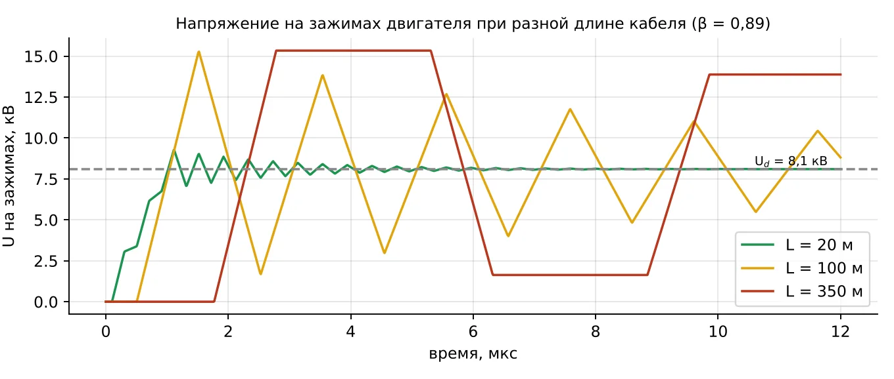
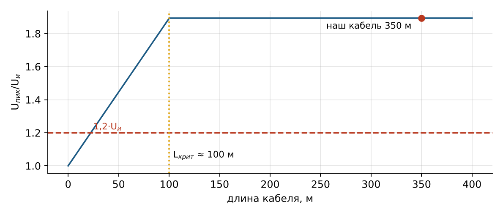
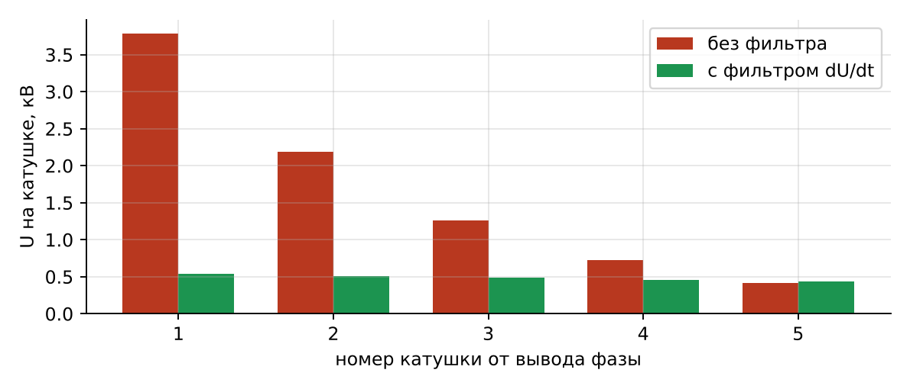
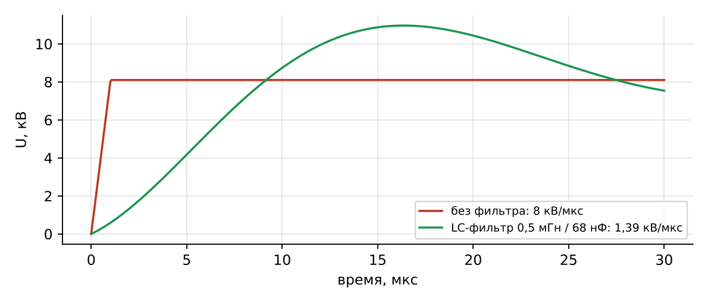
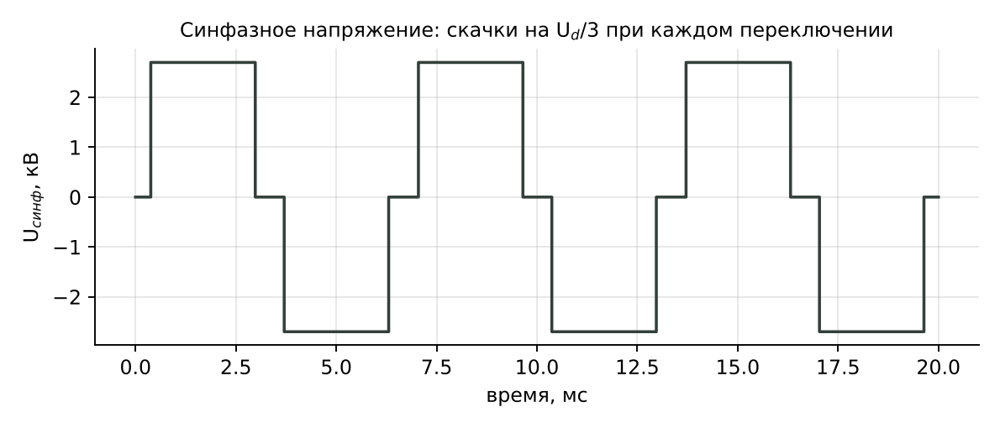
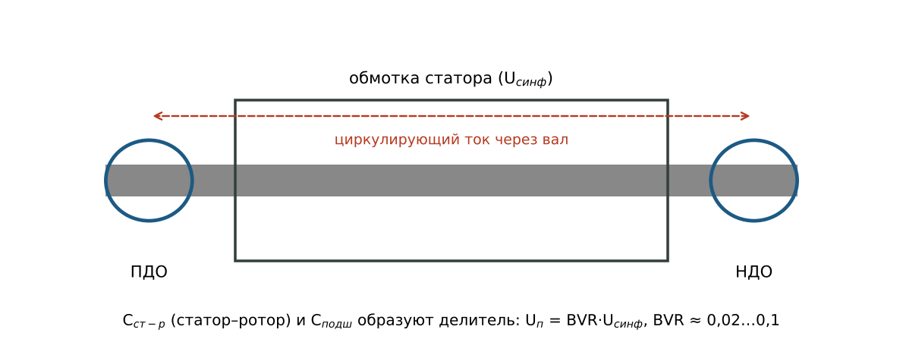

Техника высоких напряжений
Лекция 2 · вариант 1 расчётной работы
Волновые процессы в кабеле и защита двигателя от перенапряжений
Недели 1–3, 7–9: скорость волны, отражения, критическая длина, фильтр dU/dt, подшипниковые токи
1. Кабель как длинная линия
Если время нарастания импульса сравнимо со временем пробега волны по кабелю, кабель нельзя считать простым проводником — это длинная линия с распределёнными индуктивностью L0 и ёмкостью C0 на единицу длины. Импульс распространяется по ней как волна со скоростью v и волновым сопротивлением Z:
(1)
Для изоляции СПЭ εr = 2,3: v = 3·10⁸/1,517 = 1,98·10⁸ м/с = 198 м/мкс, то есть волна идёт в 1,5 раза медленнее, чем в воздухе. Отношение v/c = 0,66 называют коэффициентом укорочения (VOP); его вводят в рефлектометр при поиске повреждений. Время пробега кабеля длиной 350 м:
(2)
2. Отражение и преломление волн
На стыке двух линий (или линии и нагрузки) с разными волновыми сопротивлениями часть волны отражается. Коэффициенты отражения β и преломления α:
(3)
| Конец линии | β | Напряжение в точке |
|---|---|---|
| Разомкнут (Z2 → ∞) | +1 | удваивается |
| Замкнут (Z2 = 0) | −1 | нуль |
| Согласован (Z2 = Z1) | 0 | отражения нет |
| Двигатель 800 Ом на кабеле 45 Ом | +0,893 | U(1 + β) = 1,89·U |
Волновое сопротивление обмотки двигателя для крутых фронтов велико (сотни ом: индуктивность витков большая, ёмкость мала), поэтому двигатель для волны — почти разомкнутый конец. Пик на зажимах при Uи = 8,1 кВ:
(4)
Со стороны ПЧ (низкое сопротивление, β ≈ −1) волна отражается с обратным знаком, и в кабеле возникает затухающий колебательный процесс между нулём и почти удвоенным напряжением.

Рис. 1. Напряжение на зажимах двигателя для кабелей 20, 100 и 350 м
3. Критическая длина кабеля
Отражённая волна складывается с падающей только тогда, когда успевает вернуться, пока фронт ещё нарастает. Если двойное время пробега 2τ больше времени фронта tф, отражение полное. Отсюда критическая длина:
(5)
Для кабеля короче критического пик на зажимах приближённо равен
(6)
Чтобы перенапряжение не превышало 1,2·Uи, кабель должен быть короче 22 м. Наш кабель 350 м в 3,5 раза длиннее критического: на зажимах почти полное удвоение. Без мер защиты не обойтись.

Рис. 2. Кратность перенапряжения на зажимах в зависимости от длины кабеля
4. Распределение импульса по обмотке
Обмотка статора тоже длинная линия. Крутой фронт входит в первые катушки фазы и в первый момент распределяется по ним крайне неравномерно: на первую катушку приходится напряжение, пропорциональное отношению времени пробега волны по катушке tк к времени фронта:
(7)
При tк = 0,25 мкс и 10 витках в катушке без фильтра на первую катушку приходится 3,8 кВ, на виток — 379 В. Это выше порога частичных разрядов витковой изоляции (≈ 250 В): витковая изоляция первых катушек — самое слабое место двигателя при питании от ПЧ.

Рис. 3. Напряжение на катушках фазы без фильтра и с фильтром dU/dt
5. Фильтр dU/dt
Самый надёжный способ защиты — растянуть фронт на выходе ПЧ LC-фильтром. Напряжение на конденсаторе фильтра при скачке Uи нарастает как u = Uи(1 − cos ω0t), его наибольшая крутизна Uиω0. Требование dU/dt ≤ 1,5 кВ/мкс даёт:
(8)
При Lф = 0,5 мГн: ω0,max = 1,85·10⁵ с⁻¹, Cф ≥ 58 нФ; из ряда — 68 нФ (крутизна 1,39 кВ/мкс, f0 = 27 кГц). Колебания LC-контура гасит резистор Rд ≈ √(Lф/Cф) ≈ 86 Ом. Падение напряжения 50 Гц на дросселе при 285 А — 1,3 %.

Рис. 4. Фронт напряжения без фильтра и после LC-фильтра dU/dt
С фильтром фронт растягивается до tф' = 8,1/1,39 = 5,83 мкс, критическая длина становится 577 м, и на кабеле 350 м полного удвоения уже нет: пик 12,5 кВ вместо 15,3 кВ, на виток первой катушки — 54 В вместо 379 В.
| Средство | Что даёт | Ограничения |
|---|---|---|
| Фильтр dU/dt (на выходе ПЧ) | растягивает фронт, снижает пик и нагрузку витков | не убирает синфазное напряжение |
| Синус-фильтр | почти синусоидальное напряжение | дорогой, большой, f0 ниже частоты ШИМ |
| RC-терминатор (у двигателя) | согласует кабель, β ≈ 0 | потери в резисторе |
| Короткий кабель | L < Lкрит | часто невозможно по компоновке |
6. Синфазное напряжение и подшипниковые токи
Сумма трёх фазных напряжений инвертора не равна нулю: при каждом переключении она скачет на Ud/3. Это синфазное напряжение (напряжение нулевой последовательности) через ёмкости обмотка — ротор и ротор — корпус передаётся на подшипники. Доля, приходящаяся на масляную плёнку, — BVR = 0,02…0,1:
(9)
Плёнка смазки пробивается уже при 10–30 В; разряды выжигают на дорожках качения мелкие кратеры, затем — «стиральную доску» (рифление), и подшипник выходит из строя за месяцы. Кроме ёмкостных разрядов, у машин большой мощности возникают циркулирующие токи по контуру «вал — подшипник — корпус — подшипник».

Рис. 5. Синфазное напряжение двухуровневого инвертора

Рис. 6. Пути подшипниковых токов
Меры, применяемые вместе: синфазный дроссель на выходе ПЧ (кольца из нанокристаллического сплава на трёх фазах) снижает синфазный ток; изолированный подшипник неприводной стороны разрывает контур циркулирующего тока; щётка заземления вала со стороны привода отводит заряд вала на корпус. Фильтр dU/dt снижает крутизну, но синфазное напряжение не убирает.
Контрольные вопросы
Почему при крутых фронтах кабель рассматривают как длинную линию?
Как связаны скорость волны и диэлектрическая проницаемость изоляции? Что такое VOP?
Чему равен коэффициент отражения на разомкнутом, замкнутом и согласованном конце?
Что такое критическая длина кабеля и от чего она зависит?
Почему наибольшую нагрузку несёт витковая изоляция первой катушки?
Как выбирают ёмкость и демпфирующий резистор фильтра dU/dt?
Откуда берётся синфазное напряжение и как оно доходит до подшипников?
Какие три меры защищают подшипник и зачем нужна каждая?
Литература
Важов В. Ф., Лавринович В. А. Техника высоких напряжений : учебник. — Томск : Изд-во ТПУ.
Базуткин В. В., Ларионов В. П., Пинталь Ю. С. Техника высоких напряжений: изоляция и перенапряжения в электрических системах. — М. : Энергоатомиздат, 1986.
Розанов Ю. К., Рябчицкий М. В., Кваснюк А. А. Силовая электроника : учебник для вузов. — М. : Издательский дом МЭИ.
Ключев В. И. Теория электропривода : учебник для вузов. — М. : Энергоатомиздат.
Stone G. C., Culbert I., Boulter E. A., Dhirani H. Electrical Insulation for Rotating Machines. — 2nd ed. — Wiley–IEEE Press, 2014.
IEC TS 60034-25. Rotating electrical machines — AC electrical machines used in power drive systems — Application guide.
IEC 60034-18-41 / IEC 60034-18-42. Qualification of electrical insulation systems used in rotating machines fed from voltage converters.
IEC 60270. High-voltage test techniques — Charge-based measurement of partial discharges.